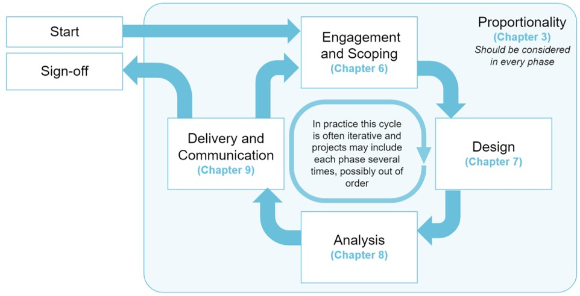

5 Roles and the analytical lifecycle
This version of the AQuA book is a preliminary ALPHA draft. It is still in development, and we are still working to ensure that it meets user needs.
The draft currently has no official status. It is a work in train and is subject to further revision and reconfiguration (possibly substantial change) before it is finalised.
An analytical project can be viewed as a variation on an archetypal project defined by roles and stages. This chapter gives an overview of the roles and the project stages in the analytical lifecycle. Subsequent chapters go into the details of each stage, and the responsibilities of each role during a given stage.
5.1 Roles and responsibilities
Organisations may have their own titles for the main functional roles involved in analysis that are set out here.
Each role may be fulfilled by a team or committee of people. However, a single individual will have overall accountability (such as the chair of a committee) for each role.
The AQuA book defines the following roles:
- Commissioner (may be known as customer)
- Requests the analysis and sets out their requirements
- Agrees what the analyst is going to do will satisfy the need
- Accepts the analysis and assurance as fit for purpose
- Requests the analysis and sets out their requirements
- Analyst
- Designs the approach, including the assurance, to meet the commissioner’s requirements
- Agrees the approach with the Commissioner
- Carries out the analysis
- Carries out their own assurance
- Acts on findings from the Assurer
- Can be a group of analysts, in which case the lead analyst is responsible
- Assurer (may be known as Analytical Assurer, Assuring Analyst)
- Reviews the assurance completed by the Analyst
- Carries out any further validation and verification they may see as appropriate
- Reports errors and areas for improvement to the analyst
- Re-reviews as required
- Confirms the work has been appropriately scoped, executed, validated and verified and documented to the Approver
- Can be a group of assurers. In which case the leader of the group is responsible. They must be independent from the analysts.
- Reviews the assurance completed by the Analyst
- Approver (may be known as Senior Analyst or Senior Responsible Officer (“SRO”))
- Scrutinises the work of the Analyst and Assurer
- Confirms (if necessary) to the Analyst, Assurer and Commissioner that the work has been appropriately assured
- Scrutinises the work of the Analyst and Assurer
The roles of Analyst and Assurer shall be distinct from each other. The Analyst should carry out their own assurance but responsibility for formal assurance to the Approver and Commissioner lies with the Assurer. In some instances, particularly for quick and / or simple analysis, an individual may deliver more than one of the roles apart from the Assurer and Analyst roles which shall be separate from one another in all cases.
5.2 The analytical lifecycle
Quality assurance activities should take place throughout all stages of an analytical project. An effective quality assurance process involves ongoing engagement between the commissioner and the analyst to ensure an appropriate balance is maintained between time, resource and quality, and to ensure a shared understanding of the assurance activities required and risks involved.

Figure 2 is adapted from the Government Functional Standard for Analysis. Analytical quality assurance activities should take place during every phase of the cycle and should consider proportionality, although analytical quality considerations may vary depending on project governance and the specific phase of the cycle. All projects will involve some element of every phase of the cycle, even if this is not clearly defined.
It is important that proportionality is considered and that there is transparency of the analytical decisions, process, limitations and changes made at each stage to enable effective assurance and communication. This should be enabled by:
- Clear documentation of the analysis, assumptions and data,
- Clear records of the analytical decisions made; and
- Clear records of the quality assurance processes and checks completed.
5.2.1 Engagement and scoping
Analytical projects typically start with customer engagement although other events may trigger analytical projects. Scoping ensures that an appropriate, common understanding of the problem is defined and that expectations are aligned with what can be delivered. During this phase the Commissioner plays an important role in communicating the questions to be addressed and working with the Analyst to ensure the requirements and scope are defined and understood.
Where analysis requires multiple cycles, for example to develop, use and update analytical models, this phase may follow on from the Delivery and Communication phase. In these cases, the phase will concentrate on the scope of the questions to be addressed in the next stage of the analytical project.
More effort may be needed to define the requirements and scope in this phase for research, evaluation or other projects that may need to seek a wider range of perspectives or for which subsequent phases and work may be delivered through a product or service.
5.2.2 Design
During the design phase, the Analyst will convert the commission into an analytical plan, including the assurance required and ensuring it is sufficient to answer the questions posed. This phase includes the communication and approval of plans produced, and some iteration between the Commissioner and the Analyst is to be expected as the analytical solution is developed and limitations understood.
For larger projects or those that require multiple cycles, the design phase may include consideration of the staging of work over the whole scope of the project as well as work required in each stage. Analysis plans for work that is dependent on insights from earlier stages may be high-level and necessitate a return to the design phase at a later date.
5.2.3 Analysis
The analysis phase is where planned analysis is undertaken, and progress and relevance are monitored. During work, the design and plan may be amended to account for changing circumstances, emerging information or unexpected difficulties or limitations encountered, and this phase also includes maintaining appropriate records of the analysis conducted, changes, decisions and assumptions made. In some cases, changes or limitations encountered may necessitate a return to either the scoping or design phase.
Throughout this phase, traceable documentation of the assurance activities undertaken shall also be produced.
In larger analytical projects, some outputs of the analysis may be completed at different times as work develops, and aspects of other phases may therefore take place concurrently.
5.2.4 Delivery, communication and sign-off
During the delivery stage, insights and analytical assurances are communicated to the Approver and the Commissioner. The aim is ensuring that these are sufficiently understood in order for the Approver and Commissioner to determine whether the work has been appropriately assured and meets their requirements. This may then trigger additional analysis and further assurance as analytical projects frequently need further iteration or extension to satisfy the Commissioner’s needs.
Work in this stage can vary considerably depending on the commission, impact, approval processes and the nature of the project. Delivery and communication activities may include producing summary packs and reports, launching dashboards or websites and presentations to boards.
After analysis results have been determined to meet the requirements, they are formally approved for dissemination during sign-off. Sign-off includes confirmation that the commission was met, documentation and evidence was captured, and appropriate assurance was conducted. This approval may be phased as work develops and insights are produced.
5.3 Maintenance and continuous review
The analytical lifecycle is not a linear process. Where analysis is used on an ongoing basis, all aspects of the lifecycle should be regularly updated. For example, consideration should be made whether
The inputs used remain appropriate The initial communication methods remain the best way to deliver the information Any software relied on continues to be supported and up to date The model continues to be calibrated appropriately (this is particularly important for black box models)
Additionally, a robust version control process should be in place to ensure any changes to the analysis are appropriately assured.
5.4 Urgent analysis
In some cases there may be a need for urgent analysis that cannot follow all the steps in this guide i.e. where the need for analysis outweighs the risk of poor quality. In this case analysts should follow the Urgent data quality assurance guidance.